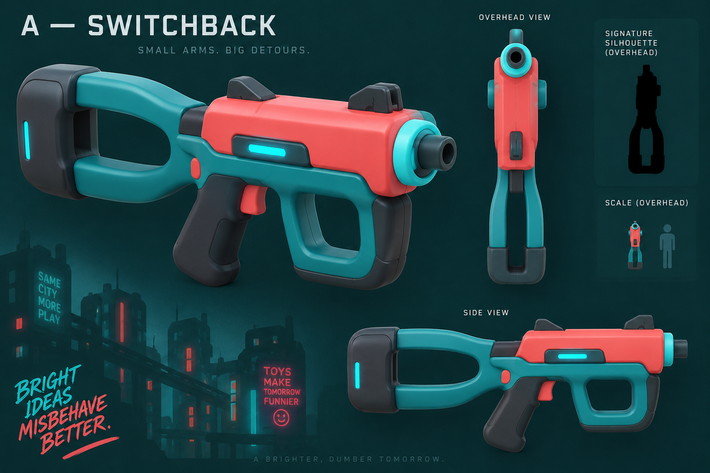
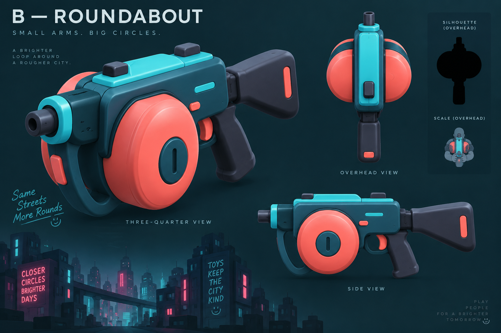
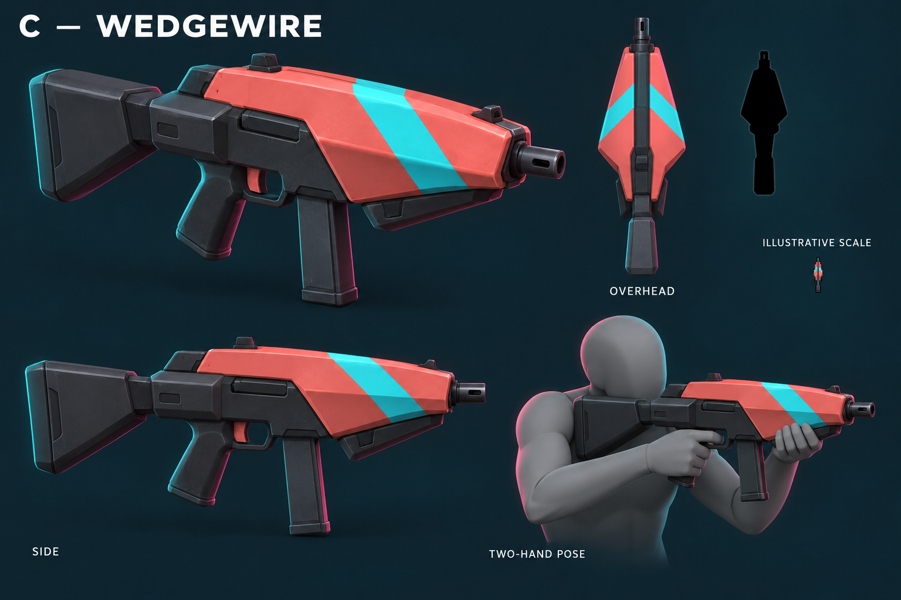

SMG — three original directions
Regner selection pending · raster concepts · 9 October 2026
Compact two-hand props for the smooth, chunky cyberpunk city. Each sheet shows
overhead and side/three-quarter views. Click a sheet for its full resolution.
Recommendation: C — Wedgewire. Its broad taper and large coral/cyan
roof planes give the clearest forward direction in these sheets. Exact dimensions,
hand poses and recognition still require a model checked at the actual camera.
A — Switchback
Forked stock and coral receiver. The open gap is its identity, but may close
at game scale or overlap the player. Support hand uses the forward underside;
stock contacts shoulder during aim.

Self-review: overhead muzzle is too front-on and stock interpretations differ
across views. Resolve in blockout if selected. No holding pose established.
B — Roundabout
Rounded coral drum lobes create the broadest, most comic overhead outline.
Support hand must clear the belly; short stock contacts shoulder. Broad mass
risks crowding the torso.

Self-review: the tiny figure is schematic, with no reliable hand/shoulder fit.
C — Wedgewire Recommended
Broad coral shell tapers to a short muzzle; cyan stripe reinforces direction.
Support hand cups the front underside and stock contacts shoulder. Needs a
held-view check to preserve compact SMG identity.

Self-review: most coherent shape/color grouping across views. Pose is a visual
proposal; player rig, hand offsets and holding clips remain unselected.